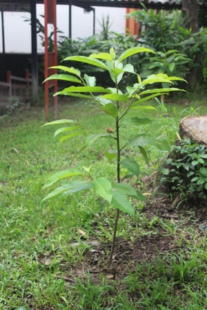

Arbol de Jardin2
Suele alcanzar un gran tamaño y altura (Puede superar los 30 m.), sobre todo si tiene que competir por la luz con árboles más grandes, como lo sería en una plantación de cocoteros. En las zonas de clima templado puede cultivarse aunque no suele alcanzar una gran altura, por las incidencias climáticas que le resultan adversas. Es originario de la India y se cultiva en países de clima cálido, como Ecuador, El Salvador, Guatemala, Venezuela, Brasil, México, Honduras, Cuba, Costa Rica, Nicaragua, Paraguay, Colombia, Panamá y República Dominicana, y en algunos de clima templado como en Argentina, Bolivia, Perú, China y EE. UU.. En la zona intertropical es, como vemos, una planta sumamente noble: no requiere de riego y rechaza los incendios; una plantación de mangos difícilmente podría quemarse durante la época de sequía, ya que es el período de máximo crecimiento de biomasa para estos árboles y de mayor actividad de la fotosíntesis por la menor nubosidad. Es un árbol agresivo con otras especies para ocupar un espacio determinado: en la imagen de un árbol de mango puede verse que, a pesar de haberse sembrado en un lado, sus ramas se extienden por todo el jardín. En España su cultivo tiene una gran importancia en las zonas subtropicales de la costa de Granada, costa oriental de Málaga, Valle del Guadalhorce e Islas Canarias.